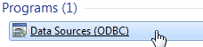

FAQ-800 Wie richte ich SQL ein?
set-up-sql
Letztes Update: 18.07.2018
Origin enthält mehrere Tutorials, die bedienfreundliche Hilfsmittel frür den Zugriff auf Datenbanken vorstellen. Um diese Tutorials auf Ihrem eigenen Computer zu üben, verwenden Sie die Datenbank AdventureWorks. Der folgende Abschnitt erläutert die Konfiguration Ihres SQL-Servers und wie Sie eine AdventureWorks-Datenbank mit Ihrem SQL-Server anhängen und mit Origin verbinden.
AdventureWorks-Datenbank herunterladen
Laden Sie die Datenbank AdventureWorks über diesen Link herunter. Bitte wählen Sie Adventure Works 2014 Full Database Backup.zip für den Download und extrahieren Sie die Datei auf Ihrer Festplatte, z.B.: E:\. Die extrahierte Datei heißt AdventureWorks2014.bak.
SQL-Server einrichten
Bevor Sie die Datenbank AdventureWorks installieren, müssen Sie eine Instanz des SQL-Servers auf Ihrem lokalen Rechner installiert haben. Die folgenden Schritte zeigen, wie Sie Microsoft SQL Server 2014 Express installieren:
Hinweis: Ihr Betriebssystem sollte Windows 7 oder höher sein.
- Öffnen Sie die Download-Webseite. Möglicherweise müssen Sie sich in Ihrem Microsoft-Konto anmelden. Klicken Sie dann auf DOWNLOAD.
- Wählen Sie die Datei ExpressAdv 32BIT\SQLEXPRADV_x86_ENU.exe (für 32-Bit-System) oder ExpressAdv 64BIT\SQLEXPRADV_x64_ENU.exe (für 64 Bit-System) und klicken Sie dann auf Weiter, um den Download zu starten.
- Auf der Downloadseite gibt es eine kurze Installationsanweisung. Sie können beim Installieren alle Standardeinstellungen übernehmen.
- Wenn die Installation beendet ist, gehen Sie bitte zum Menü Start von Windows, klicken auf Alle Programme und navigieren zu Microsoft SQL Server 2014: SQL Server 2014 Management Studio, um den SQL-Server zu öffnen.
- Der Dialog Mit Server verbinden wird aufgerufen, um die Verbindungseinstellung festzulegen. Bitte wählen Sie den Servertyp und die Authentifizierung wie im Bild unten und klicken Sie dann auf Verbinden.
- Klicken Sie mit der rechten Maustaste auf Datenbank im Feld Objekt-Explorer und wählen Sie Datenbank wiederherstellen, um den Dialog zu öffnen.
- Wählen Sie das Gerät im Abschnitt Quelle, suchen Sie und fügen Sie die Datei AdventureWorks2014.bak hinzu, die wir im vorherigen Abschnitt heruntergeladen haben. Klicken Sie auf OK, um diese Einstellungen anzuwenden.
8. Jetzt haben Sie die Datenbank erfolgreich importiert.
Datenquellen (ODBC) konfigurieren
- Klicken Sie auf die Schaltfläche Start in Windows und geben Sie Datenquellen im Feld Programme und Dateien suchen ein. Wenn Sie diese Anwendung in der Liste finden, klicken Sie auf das Element, um den Dialog zu öffnen.
- 
- Wechseln Sie zur Registerkarte System DSN in dem Dialog, klicken Sie auf Hinzufügen, um den Dialog Neue Datenquelle erstellen zu öffnen, und wählen Sie ODBC Driver 11 for SQL Server.

- Klicken Sie auf Fertigstellen. Ein neuer Dialog wird aufgerufen. Bitte legen Sie den Namen fest, beispielsweise: New_test, und wählen Sie (local) als Server aus.

- Klicken Sie auf Fertigstellen. Der Setup-Dialog des ODBC Microsoft SQL Server wird geöffnet. Sie können auf die Schaltfläche Datenquelle testen klicken.
- Wenn alles gut geht, informiert eine Meldung Sie darüber, dass: Test erfolgreich abgeschlossen! Klicken Sie in jedem Dialog auf OK, um diese Einstellungen anzuwenden.

Datenbank in Origin verbinden
- Öffnen Sie Origin und klicken Sie auf
 in der Symbolleiste Datenbankzugriff, um den SQL-Editor zu öffnen. Klicken Sie auf
in der Symbolleiste Datenbankzugriff, um den SQL-Editor zu öffnen. Klicken Sie auf  , um den Dialog Datenverknüpfungseigenschaften zu öffnen, und wählen Sie Microsoft OLE DB Provider for ODBC Drivers:
, um den Dialog Datenverknüpfungseigenschaften zu öffnen, und wählen Sie Microsoft OLE DB Provider for ODBC Drivers:
Klicken Sie auf Weiter, um die Verbindung festzulegen, wählen Sie New_test in Datenquellenname verwenden aus und dann AdventureWorks2014 unter Wählen Sie die Datenbank auf dem Server aus.
-

- Sie können auf die Schaltfläche Verbindung testen. Wenn die Verbindung erfolgreich hergestellt wurde, wird die Meldung angezeigt: Verbindung testen erfolgreich!
- Klicken Sie auf OK, um diese Einstellungen anzuwenden. Klicken Sie nur im Fenster Anmeldung auf OK. Ihnen wird eine Tabellengruppe im rechten Bedienfeld gezeigt.
- Geben Sie die SQL-Abfrage im linken Eingabefeld für einen Test ein:
SELECT e.BusinessEntityID, p.FirstName, p.MiddleName, p.LastName FROM HumanResources.Employee AS e INNER JOIN Person.Person AS p ON p.BusinessEntityID = e.BusinessEntityID
- Klicken Sie auf die Schaltfläche Ergebnisdaten in Vorschau zeigen
 , um die Daten in der Vorschau zu sehen. Wenn die Vorschau gut aussieht, klicken Sie auf die Schaltfläche Daten in Arbeitsblatt importieren
, um die Daten in der Vorschau zu sehen. Wenn die Vorschau gut aussieht, klicken Sie auf die Schaltfläche Daten in Arbeitsblatt importieren  , um diese Daten zu importieren. Die Ergebnisse sollten folgendermaßen aussehen:
, um diese Daten zu importieren. Die Ergebnisse sollten folgendermaßen aussehen: